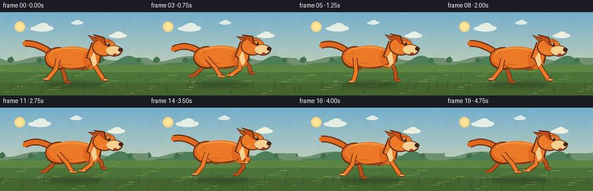
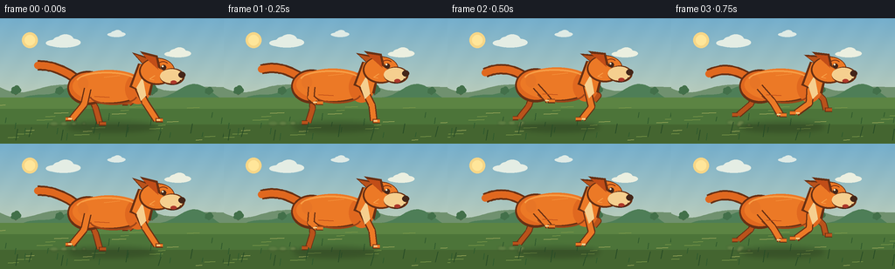

CODING AGENTS AS PIXEL WORLD MODELS
traex/GPT-5.6-Sol · instance_preservation_0000
点击播放 · 原生 RGB 像素
逐轮保存的候选
回放视频、检查图与代码变化。
每份候选均可单独播放。实际图片检查记录在下方工具轨迹中。
候选 01播放与检查图
点击播放 · 原生 RGB 像素


展开代码变化
--- 上一保存版本
+++ 本次保存版本
@@ -0,0 +1,254 @@
+from pathlib import Path
+import math
+import json
+import numpy as np
+from PIL import Image, ImageDraw, ImageFilter
+import artifact_io
+
+# Deterministic procedural animation. The scene is rendered at 3x and reduced
+# for clean, softly antialiased shapes without relying on any external assets.
+CASE_DIR = Path(__file__).resolve().parent
+SPEC = json.loads((CASE_DIR / "task_spec.json").read_text())
+W, H = int(SPEC["width"]), int(SPEC["height"])
+N = int(SPEC["frames"])
+S = 3
+WW, HH = W * S, H * S
+
+
+def P(x, y):
+ return (int(round(x * S)), int(round(y * S)))
+
+
+def box(x0, y0, x1, y1):
+ return (int(x0*S), int(y0*S), int(x1*S), int(y1*S))
+
+
+def cyc_interp(keys, u):
+ """Smooth periodic interpolation through evenly-spaced key poses."""
+ n = len(keys)
+ z = (u % 1.0) * n
+ i = int(math.floor(z))
+ t = z - i
+ # cubic smooth-step avoids angular popping at the deliberately readable poses
+ t = t*t*(3.0-2.0*t)
+ a, b = np.asarray(keys[i % n], float), np.asarray(keys[(i+1) % n], float)
+ return a*(1-t) + b*t
+
+
+def qcurve(a, b, c, count=16):
+ out = []
+ for t in np.linspace(0, 1, count):
+ p = (1-t)**2*np.asarray(a) + 2*(1-t)*t*np.asarray(b) + t*t*np.asarray(c)
+ out.append(P(*p))
+ return out
+
+
+def draw_cloud(draw, x, y, scale=1.0, alpha_color=(246,249,244)):
+ # Flat, distant cloud bank; restrained contrast keeps the dog dominant.
+ c = alpha_color
+ for dx, dy, rx, ry in [(-13,2,14,5),(-5,-1,11,7),(4,-3,13,9),(14,1,14,6),(1,3,24,6)]:
+ draw.ellipse(box(x+(dx-rx)*scale, y+(dy-ry)*scale,
+ x+(dx+rx)*scale, y+(dy+ry)*scale), fill=c)
+
+
+def draw_hill(draw, ybase, color, shift, amp, period, phase):
+ pts = [P(-8, H)]
+ for x in range(-8, W+9, 3):
+ wx = x + shift
+ y = ybase + amp*math.sin(wx/period + phase) + 0.45*amp*math.sin(wx/(period*0.47)+phase*1.7)
+ pts.append(P(x, y))
+ pts.extend([P(W+8,H), P(-8,H)])
+ draw.polygon(pts, fill=color)
+
+
+def draw_tree(draw, x, y, scale=1.0, color=(76,111,79)):
+ trunk = (91,78,55)
+ draw.rounded_rectangle(box(x-1.2*scale,y-9*scale,x+1.2*scale,y+2*scale),
+ radius=max(1,int(S*scale)), fill=trunk)
+ for dx,dy,r in [(-4,-10,5),(2,-12,6),(6,-8,5),(0,-6,7),(-6,-5,4)]:
+ draw.ellipse(box(x+(dx-r)*scale,y+(dy-r)*scale,x+(dx+r)*scale,y+(dy+r)*scale),fill=color)
+
+
+def draw_limb(draw, anchor, knee_off, paw_off, base, edge, near=True):
+ ax, ay = anchor
+ kx, ky = ax+knee_off[0], ay+knee_off[1]
+ px, py = ax+paw_off[0], ay+paw_off[1]
+ pts = [P(ax,ay),P(kx,ky),P(px,py)]
+ outer = 8.7 if near else 7.6
+ inner = 6.3 if near else 5.4
+ draw.line(pts, fill=edge, width=int(outer*S), joint="curve")
+ draw.line(pts, fill=base, width=int(inner*S), joint="curve")
+ # Rounded joints and a low horizontal paw improve silhouette readability.
+ r = inner*0.50
+ draw.ellipse(box(kx-r,ky-r,kx+r,ky+r),fill=base)
+ paw_len = 7.0 if paw_off[0] >= knee_off[0] else -7.0
+ draw.line([P(px-1,py),P(px+paw_len,py+0.3)], fill=edge, width=int(5.5*S))
+ draw.line([P(px,py-0.2),P(px+paw_len,py)], fill=base, width=int(3.5*S))
+ return (px,py)
+
+
+def render_frame(fi):
+ # Sky gradient with fixed fine grain (no temporal flicker).
+ yy = np.linspace(0, 1, HH, dtype=np.float32)[:,None,None]
+ top = np.array([116,174,204],np.float32)[None,None,:]
+ bottom = np.array([230,224,177],np.float32)[None,None,:]
+ arr = np.broadcast_to(top*(1-yy)+bottom*yy, (HH,WW,3)).copy()
+ gx = np.arange(WW,dtype=np.float32)[None,:,None]
+ gy = np.arange(HH,dtype=np.float32)[:,None,None]
+ grain = 1.2*np.sin(gx*0.071+gy*0.043)
+ arr = np.clip(arr+grain,0,255).astype(np.uint8)
+ im = Image.fromarray(arr,"RGB")
+ d = ImageDraw.Draw(im)
+
+ t = fi / max(1,N-1)
+ # Warm sun and haze.
+ d.ellipse(box(25,16,43,34), fill=(246,214,135))
+ d.ellipse(box(28,19,40,31), fill=(255,230,154))
+ draw_cloud(d, 72-fi*0.35, 27, 0.72, (228,237,228))
+ draw_cloud(d, 203-fi*0.24, 40, 0.55, (235,239,224))
+ draw_cloud(d, 133-fi*0.18, 18, 0.38, (222,234,229))
+
+ # Distant landscape moves slowly beneath a dog-tracking camera.
+ draw_hill(d, 75, (112,145,111), fi*0.7, 8, 29, 0.3)
+ draw_hill(d, 88, (78,126,87), fi*1.35, 9, 22, 1.1)
+ for base_x,sc in [(18,.55),(68,.48),(174,.6),(239,.46),(294,.54)]:
+ x=((base_x-fi*1.35+25)%(W+55))-25
+ draw_tree(d,x,87,sc,(67,112,74))
+
+ # Meadow, softly banded for depth.
+ d.rectangle(box(0,91,W,H), fill=(92,132,67))
+ d.rectangle(box(0,104,W,H), fill=(76,116,57))
+ d.rectangle(box(0,122,W,H), fill=(68,101,48))
+ # long perspective streaks create motion while preserving a calm background
+ for j in range(22):
+ x=((j*43 + 17 - fi*9.0)%(W+35))-18
+ y=100+(j*17)%41
+ length=7+((j*11)%12)
+ col=(122,151,72) if j%3 else (157,169,91)
+ d.line([P(x,y),P(x+length,y-0.7)], fill=col, width=max(S,int(S*(0.45+(y-100)/55))))
+ for j in range(18):
+ x=((j*59+9-fi*12.0)%(W+28))-14
+ y=113+(j*13)%29
+ d.line([P(x,y),P(x+1,y-5-(j%4))],fill=(49,91,46),width=S)
+
+ # Running cycle: 8 strongly readable poses, smoothly linked.
+ u = (fi % 8) / 8.0
+ ang = 2*math.pi*u
+ bounce = -1.8*abs(math.sin(ang)) + 0.6*math.cos(2*ang)
+ lean = 0.8*math.sin(ang)
+ ox = 0.8*math.sin(ang*0.5)
+
+ # Ground shadow squashes during flight and stretches during contact.
+ shadow = Image.new("RGBA",(WW,HH),(0,0,0,0))
+ sd = ImageDraw.Draw(shadow)
+ flight = abs(math.sin(ang))
+ sd.ellipse(box(77+flight*4,119,178-flight*4,130),fill=(30,42,24,80))
+ shadow=shadow.filter(ImageFilter.GaussianBlur(3*S))
+ im=Image.alpha_composite(im.convert("RGBA"),shadow)
+ d=ImageDraw.Draw(im)
+
+ # A few persistent dust puffs trail the feet; their low opacity avoids clutter.
+ dust=Image.new("RGBA",(WW,HH),(0,0,0,0)); dd=ImageDraw.Draw(dust)
+ for j in range(4):
+ age=((fi*1.35+j*2.1)%8)
+ cx=96-age*4-j*3
+ cy=121-age*.35+j*.8
+ rr=2+age*.45
+ dd.ellipse(box(cx-rr,cy-rr*.55,cx+rr,cy+rr*.55),fill=(211,188,128,max(0,int(80-age*7))))
+ dust=dust.filter(ImageFilter.GaussianBlur(1.1*S)); im=Image.alpha_composite(im,dust); d=ImageDraw.Draw(im)
+
+ edge=(105,48,19,255)
+ far=(185,82,27,255)
+ orange=(224,104,31,255)
+ orange2=(236,121,38,255)
+ light=(247,157,69,255)
+ cream=(245,207,143,255)
+ dark=(68,38,25,255)
+ body_y=bounce
+
+ fore_keys=[((8,17),(21,37)),((11,22),(13,40)),((6,25),(-5,39)),((-1,20),(-16,31)),((-3,12),(-11,18)),((6,10),(0,15)),((14,12),(9,18)),((15,15),(18,27))]
+ hind_keys=[((-4,18),(-18,35)),((-1,12),(6,18)),((10,11),(15,17)),((15,17),(24,32)),((10,22),(15,40)),((2,25),(-3,41)),((-7,23),(-18,37)),((-9,20),(-23,32))]
+
+ # Far-side legs, offset half a stride, sit behind the torso.
+ hk,hp=cyc_interp(hind_keys,u+0.5)
+ fk,fp=cyc_interp(fore_keys,u+0.5)
+ draw_limb(d,(99+ox,80+body_y),hk,hp,far,edge,False)
+ draw_limb(d,(158+ox,79+body_y),fk,fp,far,edge,False)
+
+ # Tail follows a controlled arc and stays attached at every frame.
+ tail_tip_y=58 + 6*math.sin(ang-0.7)
+ tail_mid_y=61 + 4*math.sin(ang-0.35)
+ tailpts=qcurve((87+ox,69+body_y),(65,53+body_y+2*math.sin(ang)),(43,tail_tip_y),18)
+ d.line(tailpts,fill=edge,width=12*S,joint="curve")
+ d.line(tailpts,fill=orange,width=8*S,joint="curve")
+ d.ellipse(box(39,tail_tip_y-4,47,tail_tip_y+4),fill=orange)
+
+ # Unified torso silhouette: haunch, barrel, chest overlap without seams.
+ d.ellipse(box(77+ox,60+body_y,124+ox,99+body_y),fill=edge)
+ d.ellipse(box(82+ox,61+body_y,166+ox,98+body_y),fill=edge)
+ d.ellipse(box(79+ox,62+body_y,123+ox,96+body_y),fill=orange)
+ d.ellipse(box(83+ox,59+body_y,166+ox,96+body_y),fill=orange2)
+ d.ellipse(box(143+ox,63+body_y,172+ox,98+body_y),fill=orange)
+ # dorsal light and subtle belly shading
+ d.arc(box(87+ox,61+body_y,157+ox,83+body_y),190,344,fill=light,width=2*S)
+ d.arc(box(102+ox,78+body_y,157+ox,99+body_y),10,170,fill=(157,68,24,255),width=2*S)
+ d.ellipse(box(89+ox,67+body_y,101+ox,82+body_y),fill=(231,117,38,255))
+
+ # Near legs cross cleanly in front of the belly.
+ hk,hp=cyc_interp(hind_keys,u)
+ fk,fp=cyc_interp(fore_keys,u)
+ draw_limb(d,(100+ox,80+body_y),hk,hp,orange2,edge,True)
+ draw_limb(d,(158+ox,79+body_y),fk,fp,orange2,edge,True)
+ # small cream flashes on near paws
+ for px,py in [(100+ox+hp[0],80+body_y+hp[1]),(158+ox+fp[0],79+body_y+fp[1])]:
+ d.line([P(px,py-.3),P(px+(4 if px>128 else -4),py-.1)],fill=cream,width=2*S)
+
+ # Neck and chest bridge body and head.
+ neckpoly=[P(148+ox,78+body_y),P(158+ox,51+body_y),P(179+ox,55+body_y),P(172+ox,88+body_y)]
+ d.polygon(neckpoly,fill=edge)
+ d.polygon([P(151+ox,77+body_y),P(160+ox,52+body_y),P(177+ox,56+body_y),P(169+ox,87+body_y)],fill=orange2)
+ d.polygon([P(156+ox,79+body_y),P(163+ox,67+body_y),P(167+ox,88+body_y),P(161+ox,94+body_y)],fill=cream)
+
+ # Head, floppy wind-swept ears, and recognisable muzzle.
+ ear_flutter=3*math.sin(ang-0.5)
+ # rear ear
+ d.polygon([P(165+ox,54+body_y),P(151+ox,40+body_y+ear_flutter),P(169+ox,44+body_y),P(179+ox,57+body_y)],fill=edge)
+ d.polygon([P(165+ox,53+body_y),P(154+ox,42+body_y+ear_flutter),P(169+ox,46+body_y),P(176+ox,57+body_y)],fill=far)
+ d.ellipse(box(159+ox,45+body_y,200+ox,76+body_y),fill=edge)
+ d.ellipse(box(161+ox,46+body_y,199+ox,74+body_y),fill=orange2)
+ # near floppy ear
+ d.polygon([P(170+ox,48+body_y),P(160+ox,38+body_y+ear_flutter*.6),P(180+ox,42+body_y),P(184+ox,58+body_y)],fill=edge)
+ d.polygon([P(171+ox,49+body_y),P(163+ox,41+body_y+ear_flutter*.6),P(178+ox,44+body_y),P(181+ox,58+body_y)],fill=(193,77,24,255))
+ # muzzle projects clearly in the direction of travel
+ d.ellipse(box(183+ox,57+body_y,211+ox,76+body_y),fill=edge)
+ d.ellipse(box(183+ox,58+body_y,209+ox,74+body_y),fill=cream)
+ d.ellipse(box(204+ox,61+body_y,212+ox,68+body_y),fill=dark)
+ # smile line and lower jaw
+ d.arc(box(188+ox,61+body_y,207+ox,76+body_y),15,115,fill=dark,width=S)
+ d.ellipse(box(195+ox,71+body_y,202+ox,75+body_y),fill=(173,56,42,255))
+ # bright alert eye with highlight and brow
+ d.ellipse(box(184+ox,53+body_y,190+ox,59+body_y),fill=dark)
+ d.ellipse(box(185+ox,53.5+body_y,187+ox,55.5+body_y),fill=(255,244,206,255))
+ d.arc(box(180+ox,49+body_y,193+ox,59+body_y),200,325,fill=(126,50,19,255),width=S)
+ # cheek tufts and fur-direction accents
+ d.line([P(177+ox,65+body_y),P(171+ox,69+body_y),P(176+ox,70+body_y)],fill=light,width=S)
+ d.line([P(119+ox,67+body_y),P(137+ox,65+body_y)],fill=(244,143,57,255),width=S)
+ d.line([P(108+ox,89+body_y),P(125+ox,90+body_y)],fill=(188,75,24,255),width=S)
+
+ # Foreground blades occasionally overlap paws, grounding the character.
+ for j in range(9):
+ x=((j*37+5-fi*13)%(W+18))-9
+ y=132+(j%3)*4
+ d.line([P(x,y),P(x+2+(j%2),y-10-j%5)],fill=(41,77,39,255),width=S)
+
+ return np.asarray(im.convert("RGB").resize((W,H),Image.Resampling.LANCZOS),dtype=np.uint8)
+
+
+def main():
+ frames=np.stack([render_frame(i) for i in range(N)],axis=0)
+ assert frames.shape==(N,H,W,3) and frames.dtype==np.uint8
+ artifact_io.save(frames,CASE_DIR)
+
+
+if __name__=="__main__":
+ main()
可观测工具轨迹
实际执行的命令与返回图片。
命令 1exit 0
/bin/bash -lc "cat prompt.txt && printf '\\n--- GENERATION_RULES.md ---\\n' && cat GENERATION_RULES.md && printf '\\n--- task_spec.json ---\\n' && cat task_spec.json"
命令 2exit 0
/bin/bash -lc "find . -maxdepth 3 -type f -printf '%p\\n' | sort && printf '\\n--- tools ---\\n' && command -v ffmpeg || true && command -v python3 || true && python3 - <<'PY' mods=['numpy','PIL','cv2','imageio','scipy'] for m in mods: try: x=__import__(m); print(m, getattr(x,'__version__','ok')) except Exception as e: print(m,'MISSING',e) PY"
命令 3exit 0
/bin/bash -lc 'cat artifact_io.py'
命令 4exit 2
/bin/bash -lc "cat > generate.py <<'PY'
from pathlib import Path
import math
import json
import numpy as np
from PIL import Image, ImageDraw, ImageFilter
import artifact_io
# Deterministic procedural animation. The scene is rendered at 3x and reduced
# for clean, softly antialiased shapes without relying on any external assets.
CASE_DIR = Path(__file__).resolve().parent
SPEC = json.loads((CASE_DIR / \"task_spec.json\").read_text())
W, H = int(SPEC[\"width\"]), int(SPEC[\"height\"])
N = int(SPEC[\"frames\"])
S = 3
WW, HH = W * S, H * S
def P(x, y):
return (int(round(x * S)), int(round(y * S)))
def box(x0, y0, x1, y1):
return (int(x0*S), int(y0*S), int(x1*S), int(y1*S))
def cyc_interp(keys, u):
\"\"\"Smooth periodic interpolation through evenly-spaced key poses.\"\"\"
n = len(keys)
z = (u % 1.0) * n
i = int(math.floor(z))
t = z - i
# cubic smooth-step avoids angular popping at the deliberately readable poses
t = t*t*(3.0-2.0*t)
a, b = np.asarray(keys[i % n], float), np.asarray(keys[(i+1) % n], float)
return a*(1-t) + b*t
def qcurve(a, b, c, count=16):
out = []
for t in np.linspace(0, 1, count):
p = (1-t)**2*np.asarray(a) + 2*(1-t)*t*np.asarray(b) + t*t*np.asarray(c)
out.append(P(*p))
return out
def draw_cloud(draw, x, y, scale=1.0, alpha_color=(246,249,244)):
# Flat, distant cloud bank; restrained contrast keeps the dog dominant.
c = alpha_color
for dx, dy, rx, ry in [(-13,2,14,5),(-5,-1,11,7),(4,-3,13,9),(14,1,14,6),(1,3,24,6)]:
draw.ellipse(box(x+(dx-rx)*scale, y+(dy-ry)*scale,
x+(dx+rx)*scale, y+(dy+ry)*scale), fill=c)
def draw_hill(draw, ybase, color, shift, amp, period, phase):
pts = [P(-8, H)]
for x in range(-8, W+9, 3):
wx = x + shift
y = ybase + amp*math.sin(wx/period + phase) + 0.45*amp*math.sin(wx/(period*0.47)+phase*1.7)
pts.append(P(x, y))
pts.extend([P(W+8,H), P(-8,H)])
draw.polygon(pts, fill=color)
def draw_tree(draw, x, y, scale=1.0, color=(76,111,79)):
trunk = (91,78,55)
draw.rounded_rectangle(box(x-1.2*scale,y-9*scale,x+1.2*scale,y+2*scale),
radius=max(1,int(S*scale)), fill=trunk)
for dx,dy,r in [(-4,-10,5),(2,-12,6),(6,-8,5),(0,-6,7),(-6,-5,4)]:
draw.ellipse(box(x+(dx-r)*scale,y+(dy-r)*scale,x+(dx+r)*scale,y+(dy+r)*scale),fill=color)
def draw_limb(draw, anchor, knee_off, paw_off, base, edge, near=True):
ax, ay = anchor
kx, ky = ax+knee_off[0], ay+knee_off[1]
px, py = ax+paw_off[0], ay+paw_off[1]
pts = [P(ax,ay),P(kx,ky),P(px,py)]
outer = 8.7 if near else 7.6
inner = 6.3 if near else 5.4
draw.line(pts, fill=edge, width=int(outer*S), joint=\"curve\")
draw.line(pts, fill=base, width=int(inner*S), joint=\"curve\")
# Rounded joints and a low horizontal paw improve silhouette readability.
r = inner*0.50
draw.ellipse(box(kx-r,ky-r,kx+r,ky+r),fill=base)
paw_len = 7.0 if paw_off[0] >= knee_off[0] else -7.0
draw.line([P(px-1,py),P(px+paw_len,py+0.3)], fill=edge, width=int(5.5*S))
draw.line([P(px,py-0.2),P(px+paw_len,py)], fill=base, width=int(3.5*S))
return (px,py)
def render_frame(fi):
# Sky gradient with fixed fine grain (no temporal flicker).
yy = np.linspace(0, 1, HH, dtype=np.float32)[:,None,None]
top = np.array([116,174,204],np.float32)[None,None,:]
bottom = np.array([230,224,177],np.float32)[None,None,:]
arr = np.broadcast_to(top*(1-yy)+bottom*yy, (HH,WW,3)).copy()
gx = np.arange(WW,dtype=np.float32)[None,:,None]
gy = np.arange(HH,dtype=np.float32)[:,None,None]
grain = 1.2*np.sin(gx*0.071+gy*0.043)
arr = np.clip(arr+grain,0,255).astype(np.uint8)
im = Image.fromarray(arr,\"RGB\")
d = ImageDraw.Draw(im)
t = fi / max(1,N-1)
# Warm sun and haze.
d.ellipse(box(25,16,43,34), fill=(246,214,135))
d.ellipse(box(28,19,40,31), fill=(255,230,154))
draw_cloud(d, 72-fi*0.35, 27, 0.72, (228,237,228))
draw_cloud(d, 203-fi*0.24, 40, 0.55, (235,239,224))
draw_cloud(d, 133-fi*0.18, 18, 0.38, (222,234,229))
# Distant landscape moves slowly beneath a dog-tracking camera.
draw_hill(d, 75, (112,145,111), fi*0.7, 8, 29, 0.3)
draw_hill(d, 88, (78,126,87), fi*1.35, 9, 22, 1.1)
for base_x,sc in [(18,.55),(68,.48),(174,.6),(239,.46),(294,.54)]:
x=((base_x-fi*1.35+25)%(W+55))-25
draw_tree(d,x,87,sc,(67,112,74))
# Meadow, softly banded for depth.
d.rectangle(box(0,91,W,H), fill=(92,132,67))
d.rectangle(box(0,104,W,H), fill=(76,116,57))
d.rectangle(box(0,122,W,H), fill=(68,101,48))
# long perspective streaks create motion while preserving a calm background
for j in range(22):
x=((j*43 + 17 - fi*9.0)%(W+35))-18
y=100+(j*17)%41
length=7+((j*11)%12)
col=(122,151,72) if j%3 else (157,169,91)
d.line([P(x,y),P(x+length,y-0.7)], fill=col, width=max(S,int(S*(0.45+(y-100)/55))))
for j in range(18):
x=((j*59+9-fi*12.0)%(W+28))-14
y=113+(j*13)%29
d.line([P(x,y),P(x+1,y-5-(j%4))],fill=(49,91,46),width=S)
# Running cycle: 8 strongly readable poses, smoothly linked.
u = (fi % 8) / 8.0
ang = 2*math.pi*u
bounce = -1.8*abs(math.sin(ang)) + 0.6*math.cos(2*ang)
lean = 0.8*math.sin(ang)
ox = 0.8*math.sin(ang*0.5)
# Ground shadow squashes during flight and stretches during contact.
shadow = Image.new(\"RGBA\",(WW,HH),(0,0,0,0))
sd = ImageDraw.Draw(shadow)
flight = abs(math.sin(ang))
sd.ellipse(box(77+flight*4,119,178-flight*4,130),fill=(30,42,24,80))
shadow=shadow.filter(ImageFilter.GaussianBlur(3*S))
im=Image.alpha_composite(im.convert(\"RGBA\"),shadow)
d=ImageDraw.Draw(im)
# A few persistent dust puffs trail the feet; their low opacity avoids clutter.
dust=Image.new(\"RGBA\",(WW,HH),(0,0,0,0)); dd=ImageDraw.Draw(dust)
for j in range(4):
age=((fi*1.35+j*2.1)%8)
cx=96-age*4-j*3
cy=121-age*.35+j*.8
rr=2+age*.45
dd.ellipse(box(cx-rr,cy-rr*.55,cx+rr,cy+rr*.55),fill=(211,188,128,max(0,int(80-age*7))))
dust=dust.filter(ImageFilter.GaussianBlur(1.1*S)); im=Image.alpha_composite(im,dust); d=ImageDraw.Draw(im)
edge=(105,48,19,255)
far=(185,82,27,255)
orange=(224,104,31,255)
orange2=(236,121,38,255)
light=(247,157,69,255)
cream=(245,207,143,255)
dark=(68,38,25,255)
body_y=bounce
fore_keys=[((8,17),(21,37)),((11,22),(13,40)),((6,25),(-5,39)),((-1,20),(-16,31)),((-3,12),(-11,18)),((6,10),(0,15)),((14,12),(9,18)),((15,15),(18,27))]
hind_keys=[((-4,18),(-18,35)),((-1,12),(6,18)),((10,11),(15,17)),((15,17),(24,32)),((10,22),(15,40)),((2,25),(-3,41)),((-7,23),(-18,37)),((-9,20),(-23,32))]
# Far-side legs, offset half a stride, sit behind the torso.
hk,hp=cyc_interp(hind_keys,u+0.5)
fk,fp=cyc_interp(fore_keys,u+0.5)
draw_limb(d,(99+ox,80+body_y),hk,hp,far,edge,False)
draw_limb(d,(158+ox,79+body_y),fk,fp,far,edge,False)
# Tail follows a controlled arc and stays attached at every frame.
tail_tip_y=58 + 6*math.sin(ang-0.7)
tail_mid_y=61 + 4*math.sin(ang-0.35)
tailpts=qcurve((87+ox,69+body_y),(65,53+body_y+2*math.sin(ang)),(43,tail_tip_y),18)
d.line(tailpts,fill=edge,width=12*S,joint=\"curve\")
d.line(tailpts,fill=orange,width=8*S,joint=\"curve\")
d.ellipse(box(39,tail_tip_y-4,47,tail_tip_y+4),fill=orange)
# Unified torso silhouette: haunch, barrel, chest overlap without seams.
d.ellipse(box(77+ox,60+body_y,124+ox,99+body_y),fill=edge)
d.ellipse(box(82+ox,61+body_y,166+ox,98+body_y),fill=edge)
d.ellipse(box(79+ox,62+body_y,123+ox,96+body_y),fill=orange)
d.ellipse(box(83+ox,59+body_y,166+ox,96+body_y),fill=orange2)
d.ellipse(box(143+ox,63+body_y,172+ox,98+body_y),fill=orange)
# dorsal light and subtle belly shading
d.arc(box(87+ox,61+body_y,157+ox,83+body_y),190,344,fill=light,width=2*S)
d.arc(box(102+ox,78+body_y,157+ox,99+body_y),10,170,fill=(157,68,24,255),width=2*S)
d.ellipse(box(89+ox,67+body_y,101+ox,82+body_y),fill=(231,117,38,255))
# Near legs cross cleanly in front of the belly.
hk,hp=cyc_interp(hind_keys,u)
fk,fp=cyc_interp(fore_keys,u)
draw_limb(d,(100+ox,80+body_y),hk,hp,orange2,edge,True)
draw_limb(d,(158+ox,79+body_y),fk,fp,orange2,edge,True)
# small cream flashes on near paws
for px,py in [(100+ox+hp[0],80+body_y+hp[1]),(158+ox+fp[0],79+body_y+fp[1])]:
d.line([P(px,py-.3),P(px+(4 if px>128 else -4),py-.1)],fill=cream,width=2*S)
# Neck and chest bridge body and head.
neckpoly=[P(148+ox,78+body_y),P(158+ox,51+body_y),P(179+ox,55+body_y),P(172+ox,88+body_y)]
d.polygon(neckpoly,fill=edge)
d.polygon([P(151+ox,77+body_y),P(160+ox,52+body_y),P(177+ox,56+body_y),P(169+ox,87+body_y)],fill=orange2)
d.polygon([P(156+ox,79+body_y),P(163+ox,67+body_y),P(167+ox,88+body_y),P(161+ox,94+body_y)],fill=cream)
# Head, floppy wind-swept ears, and recognisable muzzle.
ear_flutter=3*math.sin(ang-0.5)
# rear ear
d.polygon([P(165+ox,54+body_y),P(151+ox,40+body_y+ear_flutter),P(169+ox,44+body_y),P(179+ox,57+body_y)],fill=edge)
d.polygon([P(165+ox,53+body_y),P(154+ox,42+body_y+ear_flutter),P(169+ox,46+body_y),P(176+ox,57+body_y)],fill=far)
d.ellipse(box(159+ox,45+body_y,200+ox,76+body_y),fill=edge)
d.ellipse(box(161+ox,46+body_y,199+ox,74+body_y),fill=orange2)
# near floppy ear
d.polygon([P(170+ox,48+body_y),P(160+ox,38+body_y+ear_flutter*.6),P(180+ox,42+body_y),P(184+ox,58+body_y)],fill=edge)
d.polygon([P(171+ox,49+body_y),P(163+ox,41+body_y+ear_flutter*.6),P(178+ox,44+body_y),P(181+ox,58+body_y)],fill=(193,77,24,255))
# muzzle projects clearly in the direction of travel
d.ellipse(box(183+ox,57+body_y,211+ox,76+body_y),fill=edge)
d.ellipse(box(183+ox,58+body_y,209+ox,74+body_y),fill=cream)
d.ellipse(box(204+ox,61+body_y,212+ox,68+body_y),fill=dark)
# smile line and lower jaw
d.arc(box(188+ox,61+body_y,207+ox,76+body_y),15,115,fill=dark,width=S)
d.ellipse(box(195+ox,71+body_y,202+ox,75+body_y),fill=(173,56,42,255))
# bright alert eye with highlight and brow
d.ellipse(box(184+ox,53+body_y,190+ox,59+body_y),fill=dark)
d.ellipse(box(185+ox,53.5+body_y,187+ox,55.5+body_y),fill=(255,244,206,255))
d.arc(box(180+ox,49+body_y,193+ox,59+body_y),200,325,fill=(126,50,19,255),width=S)
# cheek tufts and fur-direction accents
d.line([P(177+ox,65+body_y),P(171+ox,69+body_y),P(176+ox,70+body_y)],fill=light,width=S)
d.line([P(119+ox,67+body_y),P(137+ox,65+body_y)],fill=(244,143,57,255),width=S)
d.line([P(108+ox,89+body_y),P(125+ox,90+body_y)],fill=(188,75,24,255),width=S)
# Foreground blades occasionally overlap paws, grounding the character.
for j in range(9):
x=((j*37+5-fi*13)%(W+18))-9
y=132+(j%3)*4
d.line([P(x,y),P(x+2+(j%2),y-10-j%5)],fill=(41,77,39,255),width=S)
return np.asarray(im.convert(\"RGB\").resize((W,H),Image.Resampling.LANCZOS),dtype=np.uint8)
def main():
frames=np.stack([render_frame(i) for i in range(N)],axis=0)
assert frames.shape==(N,H,W,3) and frames.dtype==np.uint8
artifact_io.save(frames,CASE_DIR)
if __name__==\"__main__\":
main()
PY
python3 generate.py
python3 - <<'PY'
from PIL import Image
import numpy as np
z=np.load('pixels.npz')['pixels']
print('pixels',z.shape,z.dtype,'unique first',len(np.unique(z[:,:,0])))
ims=[np.array(Image.open(f'frames/{i:02d}.png')) for i in range(20)]
a=np.stack(ims)
print('frames',a.shape,a.dtype,'range',a.min(),a.max())
print('mean frame abs deltas',np.abs(a[1:].astype(int)-a[:-1]).mean(axis=(1,2,3)).round(2).tolist())
PY
ffmpeg -y -loglevel error -framerate 4 -i frames/%02d.png -c:v libx264 -pix_fmt yuv420p preview.mp4
ls -lh pixels.npz inspection.png transition_check.png index.html preview.mp4"命令 5exit 1
/bin/bash -lc 'set -e
before=$(sha256sum pixels.npz | awk '"'{print "'$1}'"')
python3 generate.py >/tmp/generate.log 2>&1
after="'$(sha256sum pixels.npz | awk '"'{print "'$1}'"')
python3 -m py_compile generate.py
python3 - <<'PY'
from pathlib import Path
from PIL import Image
import numpy as np, json
spec=json.loads(Path('task_spec.json').read_text())
files=sorted(Path('frames').glob('*.png'))
assert len(files)==20
A=np.stack([np.asarray(Image.open(p).convert('RGB')) for p in files])
assert A.shape==(spec['frames'],spec['height'],spec['width'],3)
assert A.dtype==np.uint8
# Orange character pixels: verify a substantial, consistently positioned subject.
r,g,b=A[...,0],A[...,1],A[...,2]
mask=(r>150)&(r>g*1.35)&(g>b*1.25)&(np.indices(r.shape)[1]<128)
areas=[]; boxes=[]
for m in mask:
y,x=np.where(m)
areas.append(len(x)); boxes.append((int(x.min()),int(y.min()),int(x.max()),int(y.max())))
print('validated shape/dtype:',A.shape,A.dtype)
print('subject orange pixel area range:',min(areas),max(areas))
print('subject extent range:', tuple(np.min(boxes,axis=0)), tuple(np.max(boxes,axis=0)))
print('all adjacent frames differ:',bool(np.all(np.any(A[1:]"'!=A[:-1],axis=(1,2,3)))))
print('"'outputs:',', '.join(str(p) for p in ['pixels.npz','frames/','inspection.png','transition_check.png','index.html']))
PY
printf 'reproducible hash: %s (%s)\\n' \""'$after" "$([ "$before" = "$after" ] && echo stable || echo CHANGED)"
cat /tmp/generate.log'命令 6exit 0
/bin/bash -lc 'set -e
mkdir -p .tmp
before=$(sha256sum pixels.npz | awk '"'{print "'$1}'"')
python3 generate.py >.tmp/generate.log 2>&1
after="'$(sha256sum pixels.npz | awk '"'{print "'$1}'"')
python3 -m py_compile generate.py
python3 - <<'PY'
from pathlib import Path
from PIL import Image
import numpy as np, json
spec=json.loads(Path('task_spec.json').read_text())
files=sorted(Path('frames').glob('*.png'))
assert len(files)==20
A=np.stack([np.asarray(Image.open(p).convert('RGB')) for p in files])
assert A.shape==(spec['frames'],spec['height'],spec['width'],3)
assert A.dtype==np.uint8
r,g,b=A[...,0],A[...,1],A[...,2]
mask=(r>150)&(r>g*1.35)&(g>b*1.25)
areas=[]; boxes=[]
for m in mask:
y,x=np.where(m)
areas.append(len(x)); boxes.append((int(x.min()),int(y.min()),int(x.max()),int(y.max())))
print('validated shape/dtype:',A.shape,A.dtype)
print('orange subject/color pixel area range:',min(areas),max(areas))
print('orange color extent ranges:', tuple(np.min(boxes,axis=0)), tuple(np.max(boxes,axis=0)))
print('all adjacent frames differ:',bool(np.all(np.any(A[1:]"'!=A[:-1],axis=(1,2,3)))))
print('"'outputs: pixels.npz, frames/, inspection.png, transition_check.png, index.html')
PY
printf 'reproducible hash: %s (%s)\\n' \""'$after" "$([ "$before" = "$after" ] && echo stable || echo CHANGED)"
cat .tmp/generate.log'保存候选 1 份；完成命令 6 次；可验证图片返回 0 张。原始 API 响应与完整日志保留在本地。